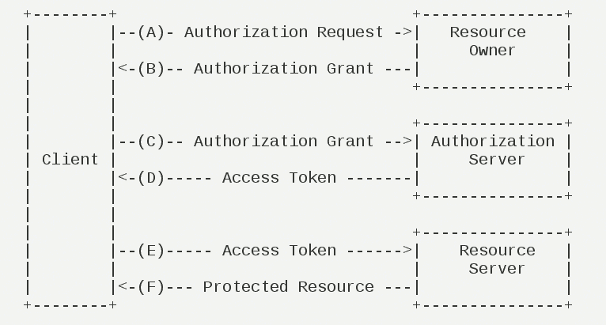
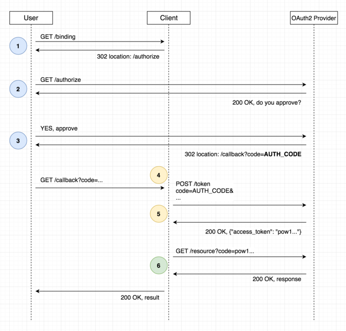
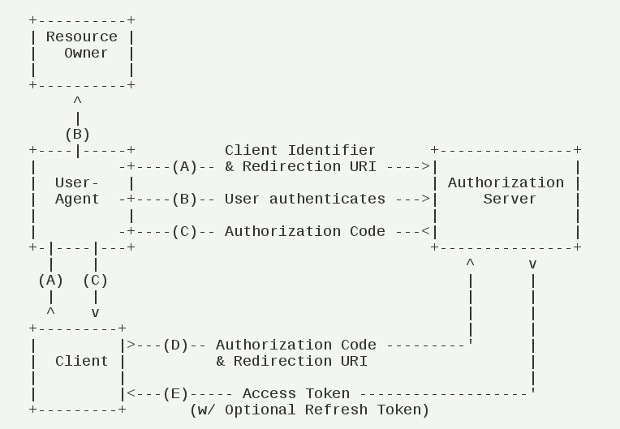
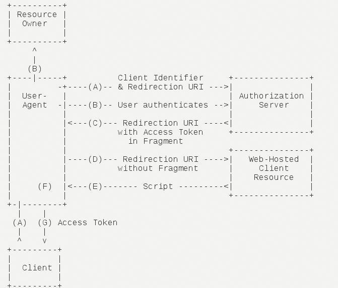
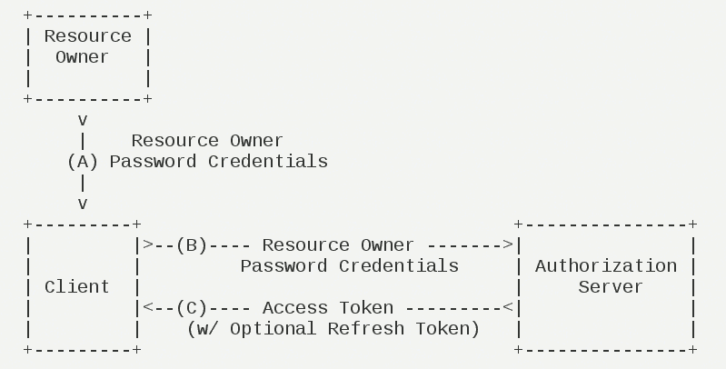
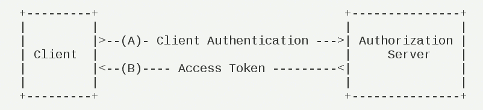

前记
OAuth2 可以方便第三方应用获取用户在其他应用的信息。
比如用 QQ 账户登录优酷，优酷就会先让用户登录 QQ，然后让用户确认授权优酷访问 QQ 上的信息，确认后优酷就获得了 QQ 的 OAuth 服务器返回的 token，之后就可以通过 token 访问到权力范围内的用户相关信息。
以下是相关的文章：
这篇用豆瓣举例的文章 一张图搞定OAuth2.0 写得不错。这里也参考它的简易 Demo，并结合自己对 OAuth2 协议的理解，和腾讯文档写出本文的 Demo —— 模拟 QQ 授权银行客户端（授权码模式）。
应用场景
有一个”云冲印”的网站，可以将用户储存在 Google 的照片，冲印出来。用户为了使用该服务，必须让”云冲印”读取自己储存在 Google 上的照片。
问题是只有得到用户的授权，Google 才会同意”云冲印”读取这些照片。那么，”云冲印”怎样获得用户的授权呢？
传统方法是，用户将自己的 Google 用户名和密码，告诉”云冲印”，后者就可以读取用户的照片了。这样的做法有以下几个严重的缺点：
- “云冲印”为了后续的服务，会保存用户的密码，这样很不安全。
- Google 不得不部署密码登录，而我们知道，单纯的密码登录并不安全。
- “云冲印”拥有了获取用户储存在 Google 所有资料的权力，用户没法限制”云冲印”获得授权的范围和有效期。
- 用户只有修改密码，才能收回赋予”云冲印”的权力。但是这样做，会使得其他所有获得用户授权的第三方应用程序全部失效。
- 只要有一个第三方应用程序被破解，就会导致用户密码泄漏，以及所有被密码保护的数据泄漏。
OAuth 就是为了解决上面这些问题而诞生的。
名词定义
- Third-party Application：第三方应用程序，本文中又称”客户端”（Client），即例子中的”云冲印”。
- HTTP Service：HTTP 服务提供商，本文中简称”服务提供商”，即例子中的 Google。
- Resource Owner：资源所有者，本文中又称”用户”（User）。
- User Agent：用户代理，本文中就是指浏览器。
- Authorization Server：认证服务器，即服务提供商专门用来处理认证的服务器。
- Resource Server：资源服务器，即服务提供商存放用户生成的资源的服务器。它与认证服务器，可以是同一台服务器，也可以是不同的服务器。
OAuth 的作用就是让”客户端”安全可控地获取”用户”的授权，与”服务商提供商”进行互动。
OAuth的思路
OAuth 在”客户端”与”服务提供商”之间，设置了一个授权层（Authorization Layer）。
“客户端”不能直接登录”服务提供商”，只能登录授权层，以此将用户与客户端区分开来。
“客户端”登录授权层所用的令牌（Token），与用户的密码不同。用户可以在登录的时候，指定授权层令牌的权限范围和有效期。
“客户端”登录授权层以后，”服务提供商”根据令牌的权限范围和有效期，向”客户端”开放用户储存的资料。
运行流程

（A）用户打开客户端以后，客户端要求用户给予授权。
（B）用户同意给予客户端授权。（关键，有了这个授权以后，客户端就可以获取令牌，进而凭令牌获取资源）
（C）客户端使用上一步获得的授权，向认证服务器申请令牌。
（D）认证服务器对客户端进行认证以后，确认无误，同意发放令牌。
（E）客户端使用令牌，向资源服务器申请获取资源。
（F）资源服务器确认令牌无误，同意向客户端开放资源。

客户端的授权模式
客户端必须得到用户的授权（Authorization Grant），才能获得令牌（Access Token）。
OAuth2 定义了四种授权方式：
- 授权码模式（Authorization Code）
- 简化模式（Implicit）
- 密码模式（Resource Owner Password Credentials）
- 客户端模式（Client Credentials）
授权码模式（Authorization code）
功能最完整、流程最严密的授权模式。
特点：通过客户端的后台服务器，与”服务提供商”的认证服务器进行互动。
步骤

（A）用户访问客户端，客户端将用户导向认证服务器。
（B）用户选择是否给予客户端授权。
（C）假设用户给予授权，认证服务器将用户导向客户端事先指定的”重定向URI”（Redirection URI），同时附上一个授权码。
（D）客户端收到授权码，带上”重定向URI”向认证服务器申请令牌。（这一步是在客户端的后台的服务器上完成的，对用户不可见）
（E）认证服务器核对了授权码和重定向 URI，确认无误后，向客户端发送访问令牌（Access Token）和更新令牌（Refresh Token）。
对于应用而言，需要进行两步：
- 获取 Authorization Code => （A）（B）（C）步骤
- 通过 Authorization Code 获取 Access Token => （D）（E）步骤
过程详解
获取 Authorization Code
请求地址：https://demo.com/authorize
请求方法：GET
| 请求参数 | 是否必须 | 描述 |
|---|---|---|
| response_type | 是 | 授权类型，此值固定为”code” |
| client_id | 是 | 在认证服务器注册获得的客户端 ID |
| client_secret | 否 | 在认证服务器注册获得的客户端秘钥（如果没有分配，可以为空） |
| state | 是 | 客户端的状态值。防止客户端被CSRF攻击，成功授权后回调时会原样带回。严格按照流程检查用户与 state 参数状态的绑定，参见RFC 文档，以及这篇文章OAuth2 CSRF攻击 |
| redirect_uri | 是 | 成功授权后的回调地址，注意需将 url 进行 URLEncode |
| scope | 否 | 请求用户授权时向用户显示的可进行授权的列表。建议控制授权项的数量，只传入必要的接口名称，因为授权项越多，用户越可能拒绝进行任何授权 |
例子请求：
1 | GET /authorize?response_type=code&client_id=abc123&client_secret=abc&state=test&scope=userinfo&redirect_uri=https%3a%2f%2fclient.com%2findex HTTP/1.1 |
例子返回：
- 如果用户成功登录并授权，则会跳转到指定的回调地址，并在 redirect_uri 地址后带上 Authorization Code 和原始的 state 值。比如：
1 | HTTP/1.1 302 Found |
| 返回参数 | 描述 |
|---|---|
| code | Authorization Code，注意设置该码的过期时间。有效期应该很短，通常设为10分钟，客户端只能使用一次该码，否则会被授权服务器拒绝。该码与客户端 ID 和重定向 URI 是一一对应关系。 |
| state | 与请求中的 state 一致 |
- 如果用户在登录授权过程中取消登录流程，对于 PC 网站，登录页面直接关闭；对于 WAP 网站，同样跳转回指定的回调地址，并在 redirect_uri 地址后带上 usercancel 参数和原始的 state 值，其中 usercancel 值为非零，比如：
1 | HTTP/1.1 302 Found |
通过 Authorization Code 获取 Access Token
请求方法：POST
| 请求头 | 是否必须 | 描述 |
|---|---|---|
| Authorization | 是 | Base64(client_id + client_secret) |
| 请求参数 | 是否必须 | 描述 |
|---|---|---|
| grant_type | 是 | 授权类型，此值固定为”authorization_code” |
| code | 是 | 上一步返回的 Authorization Code |
| redirect_uri | 是 | 与上一步中的回调地址 redirect_uri 一致 |
例子请求：
1 | POST /token HTTP/1.1 |
例子返回：
1 | HTTP/1.1 200 OK |
| 返回参数 | 描述 |
|---|---|
| access_token | 授权令牌 |
| expires_in | 有效期，单位为秒 |
| refresh_token | 在授权自动续期步骤中，获取新的 access_token 时需要提供的参数 |
| token_type | 令牌类型，bearer 或 mac 类型 |
| scope | 权限范围，如果与客户端申请的范围一致，可省略 |
更新令牌（可选）
请求地址：
请求方法：GET
| 请求参数 | 是否必须 | 描述 |
|---|---|---|
| grant_type | 是 | 授权类型，此值固定为”refresh_token” |
| client_id | 是 | 与上一步中的客户端 ID 一致 |
| refresh_token | 是 | 上一步返回的 refres_token |
返回内容同上一步。
简化模式（Implicit Grant Type）
不通过第三方应用程序的服务器，直接在浏览器中向认证服务器申请令牌，跳过了”获取授权码”步骤。所有步骤在浏览器中完成，令牌对访问者是可见的，且客户端不需要认证。
步骤

（A）客户端将用户导向认证服务器。
（B）用户决定是否给于客户端授权。
（C）假设用户给予授权，认证服务器将用户导向客户端指定的”重定向URI”，并在 URI 中附上访问令牌。
（D）浏览器向资源服务器发出请求，但不包括上一步收到的访问令牌。
（E）资源服务器返回一个脚本，其中包含的代码可以获取访问令牌。
（F）浏览器执行上一步获得的脚本，提取出令牌。
（G）浏览器将令牌发给客户端。
对于应用而言，只需一步：获取 Access Token => （A）（B）（C）步骤
过程详解
获取 Access Token
请求地址：https://demo.com/authorize
请求方法：GET
| 请求参数 | 是否必须 | 描述 |
|---|---|---|
| response_type | 是 | 授权类型，此值固定为”token” |
| client_id | 是 | 在认证网站注册获得的客户端 ID |
| state | 是 | 客户端的状态值。防止第三方应用被CSRF攻击，成功授权后回调时会原样带回。严格按照流程检查用户与 state 参数状态的绑定 |
| redirect_uri | 是 | 成功授权后的回调地址，注意需将 url 进行 URLEncode |
| scope | 否 | 请求用户授权时向用户显示的可进行授权的列表。 |
除了请求参数中 response_type 的值不同外，其他与授权码模式基本一致。
例子请求：
1 | GET /authorize?response_type=code&client_id=abc123&state=test&redirect_uri=https%3a%2f%2fclient.com%2findex HTTP/1.1 |
例子返回：
1 | HTTP/1.1 302 Found |
| 返回参数 | 描述 |
|---|---|
| access_token | 授权令牌 |
| expires_in | 有效期，单位为秒 |
| token_type | 令牌类型，bearer 或 mac 类型 |
| scope | 权限范围，如果与客户端申请的范围一致，可省略 |
| state | 客户端的状态值。同请求 state |
密码模式（Resource Owner Password Credentials Grant）
用户向客户端提供自己的用户名和密码。客户端使用这些信息，向”服务商提供商”索要授权。
在这种模式中，用户必须把自己的密码给客户端，但是客户端不得储存密码。这通常用在用户对客户端高度信任的情况下，比如客户端是操作系统的一部分，或者由一个著名公司出品。而认证服务器只有在其他授权模式无法执行的情况下，才能考虑使用这种模式。
步骤

（A）用户向客户端提供用户名和密码。
（B）客户端将用户名和密码发给认证服务器，向后者请求令牌。
（C）认证服务器确认无误后，向客户端提供访问令牌。
过程详解
过程和传统的登录获取 token 基本一致。
获取 Access Token
请求方法：GET
| 请求参数 | 是否必须 | 描述 |
|---|---|---|
| grant_type | 是 | 授权类型，此值固定为”password” |
| username | 是 | 用户名 |
| password | 是 | 用户密码 |
| scope | 否 | 请求用户授权时向用户显示的可进行授权的列表。 |
例子请求：
1 | GET /token?grant_type=password&username=abc&password=abc HTTP/1.1 |
例子返回：
1 | HTTP/1.1 200 OK |
| 返回参数 | 描述 |
|---|---|
| access_token | 授权令牌 |
| expires_in | 有效期，单位为秒 |
| refresh_token | 在授权自动续期步骤中，获取新的 access_token 时需要提供的参数 |
| token_type | 令牌类型，bearer 或 mac 类型 |
| scope | 权限范围，如果与客户端申请的范围一致，可省略 |
整个过程中，客户端不能保存用户密码。
客户端模式（Client Credentials Grant）
指客户端以自己的名义，而不是以用户的名义，向”服务提供商”进行认证。严格地说，客户端模式并不属于 OAuth 框架所要解决的问题。
在这种模式中，用户直接向客户端注册，客户端以自己的名义要求”服务提供商”提供服务，其实不存在授权问题。
步骤

（A）客户端向认证服务器进行身份认证，并要求一个访问令牌。
（B）认证服务器确认无误后，向客户端提供访问令牌。
获取 Access Token
请求方法：GET
| 请求参数 | 是否必须 | 描述 |
|---|---|---|
| grant_type | 是 | 授权类型，此值固定为”clientcredentials” |
| scope | 否 | 请求用户授权时向用户显示的可进行授权的列表。 |
例子请求：
1 | GET /token?grant_type=client_credentials HTTP/1.1 |
例子返回：
1 | HTTP/1.1 200 OK |
| 返回参数 | 描述 |
|---|---|
| access_token | 授权令牌 |
| expires_in | 有效期，单位为秒 |
| refresh_token | 在授权自动续期步骤中，获取新的 access_token 时需要提供的参数 |
| token_type | 令牌类型，bearer 或 mac 类型 |
| scope | 权限范围，如果与客户端申请的范围一致，可省略 |